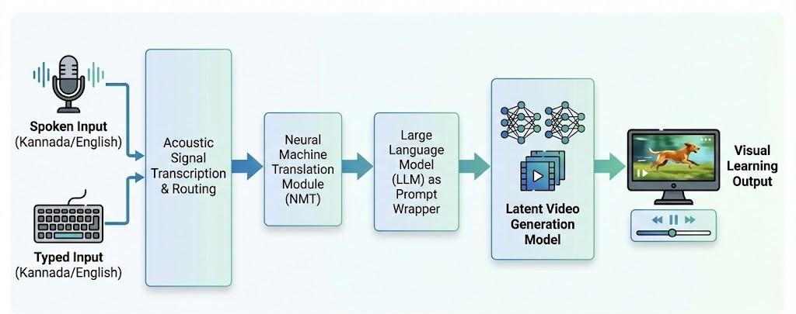

Table I: Shows example outputs generated by the prototype system.
| Input Object | Generated Scenes | Final Output | Status |
|---|---|---|---|
| Aeroplane | 8 scenes | Educational video | Successful |
| Dog | 8 scenes | Educational video | Successful |
| Lion | 8 scenes | Educational video | Successful |
Recent advancements in generative Artificial Intelligence (AI) have created new opportunities for developing interactive and accessible educational technologies. Specially abled learners, particularly hyperactive children, often rely on visual learning methods to understand object vocabulary and real-world concepts. However, traditional educational tools such as flashcards and static images provide limited dynamic visual representation.
This project presents a multimodal Speech-to-Video Generation Framework aimed at helping specially abled learners by turning spoken or typed object names into short educational videos. The system combines speech recognition, support for multiple languages, prompt generation, and generative AI-based video creation to generate visual demonstrations that match user input. Instead of training custom datasets, the system uses pretrained generative models run in a GPU-enabled environment to create multiple visual scenes for each object. These scenes are merged one after the other to produce a final educational video that can be accessed through a web-based interface.
The prototype shows that it's possible to change spoken or written input into visual learning materials using generative AI methods. The framework emphasizes the ability of AI-based multimedia creation tools to improve accessibility and engagement in inclusive learning settings.
The system utilizes a multi-stage pipeline to ensure high-quality visual output from simple spoken words.
Accepts Voice/Text in English or Kannada (e.g., "ನಾಯಿ").
Translates regional language to English (e.g., "Dog").
LLM expands "Dog" to "A cinematic video of a cute dog running."
Latent Diffusion Model synthesizes the final video.

Figure 1: End-to-End System Architecture
Real outputs generated by the system from simple single-word inputs.
Table I: Shows example outputs generated by the prototype system.
| Input Object | Generated Scenes | Final Output | Status |
|---|---|---|---|
| Aeroplane | 8 scenes | Educational video | Successful |
| Dog | 8 scenes | Educational video | Successful |
| Lion | 8 scenes | Educational video | Successful |
Comparison of the proposed framework with key approaches discussed in the literature review.
| Reference Paper | Primary Goal | Input Modality | Visual Output | Target Audience |
|---|---|---|---|---|
| AI-Based Multilingual System [1] | Multilingual Generation | Text / Speech | Synchronized Media | General Learners |
| AI-Driven Accessibility [3, 4] | Improve Accessibility | Speech / Text | Images, Emojis, Graphical Cues | Hearing & Visually Impaired |
| Text-to-Video Diffusion [2, 9, 10] | High-Quality Video Synthesis | Text + Structural Guidance | General Scene Videos | General Users |
| Our Framework (Visual Learning) | Object Vocabulary Learning | Voice & Text (Multilingual) | Multi-Scene Educational Video | Specially Abled (Hyperactive Children) |